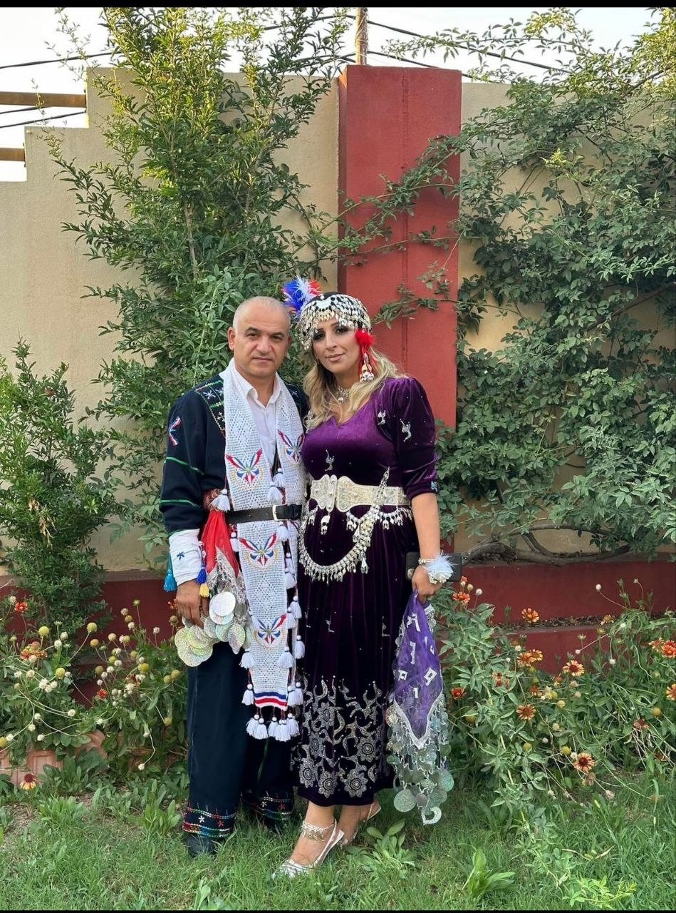
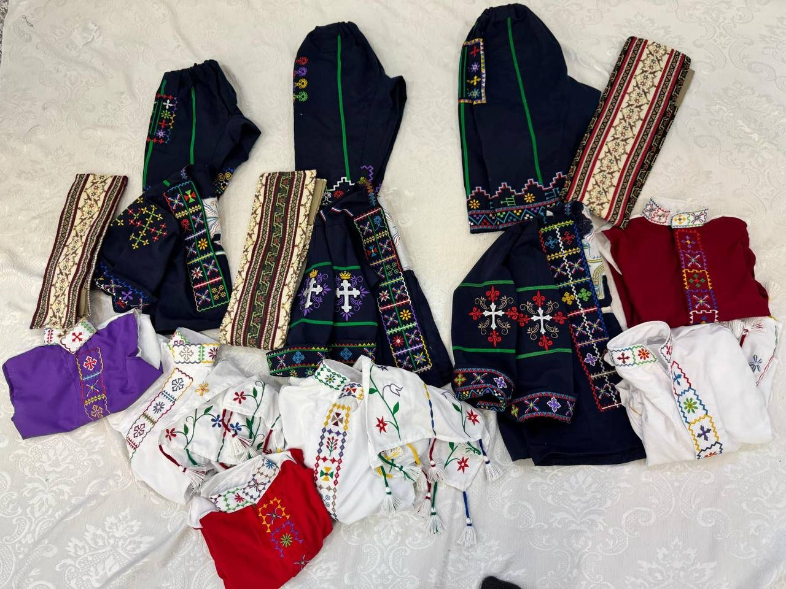
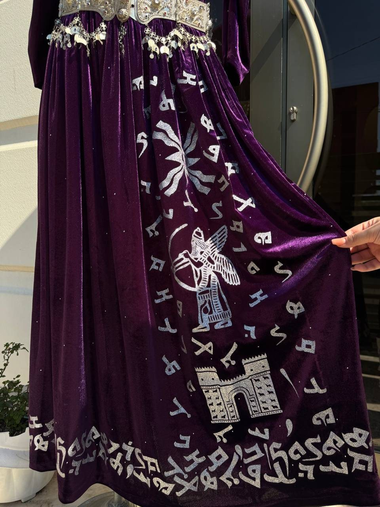
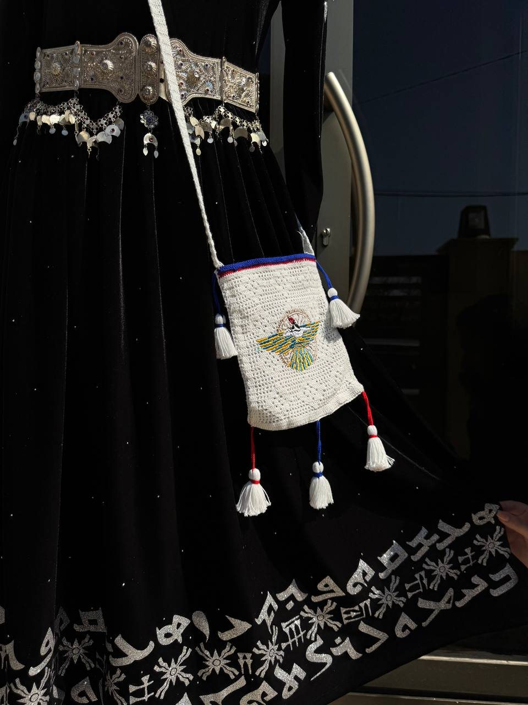

Custom Khomala Designs
Personalized Assyrian traditional attire designed around the customer’s size, preferred colors, event, and style.
Custom Assyrian Traditional Attire
Founded by Aylin Ajmaya and Basim Yousef, Khomala creates vibrant, custom-made Assyrian attire that blends timeless tradition with modern elegance and meaningful cultural symbols.


Our Story
Khomala was founded by Aylin Ajmaya and her husband Basim Yousef in 2022, but Aylin’s love for Assyrian traditional attire began long before the business itself. Since childhood, she had a passion for creating khomala-related pieces, inspired by the beauty of Assyrian heritage, traditional colors, cultural symbols, and the details that make every outfit unique.
Her creative journey became more personal in 2012, when she began designing and creating custom dresses for her sisters. What started as family-made pieces soon became a deeper expression of her talent and passion. With every dress, Aylin developed her own style — one that respects the traditional Assyrian look while adding a fresh, modern, and elegant touch.
With the support of Basim and her family, Aylin officially launched Khomala in 2022. Her goal was to modernize Assyrian traditional outfits without losing their original beauty, identity, and cultural meaning.
Mission
Khomala is more than custom-made clothing. It is a celebration of Assyrian identity, creativity, and pride. Through vibrant colors, meaningful symbols, and carefully designed details, Aylin creates pieces that honor the past while inspiring a new generation to feel connected to their roots.
Services
Each piece is prepared with attention to color, fit, details, and the feeling the customer wants to carry into their celebration.
Personalized Assyrian traditional attire designed around the customer’s size, preferred colors, event, and style.
Elegant traditional looks for brides, sisters, mothers, families, and special wedding celebrations.
Vibrant outfits made for Assyrian New Year, dancing, festivals, community gatherings, and heritage events.
Coordinated traditional looks for children, couples, and families who want to celebrate together.
Belts, fabric details, embroidery, symbolic motifs, headpieces, and styling touches that complete the look.
Guidance on colors, traditional elements, modern touches, and how to make the design feel personal and meaningful.
Featured Looks
A curated selection of Khomala’s signature Assyrian traditional attires, designed to celebrate heritage through vibrant colors, elegant details, and meaningful cultural symbols. Each featured piece reflects Aylin’s vision of blending the beauty of traditional Assyrian clothing with a modern, custom-made finish for special occasions, weddings, Akito celebrations, and unforgettable cultural moments..
Family & Children Sets
Celebrate Assyrian heritage together with custom traditional looks designed for families, couples, and children. From matching sets to special occasion outfits, each piece is created with vibrant colors, meaningful details, and a style that helps every generation wear their culture with pride.
Design Details
Every Khomala design is created to balance the beauty of traditional Assyrian attire with a fresh, wearable look. Colors, patterns, accessories, and symbols are selected to make each piece feel proud, elegant, and deeply connected to heritage.
See community shared photos


Custom Pieces & Details
Explore the details that make each Khomala piece unique — from rich fabrics and traditional patterns to handmade touches, belts, embroidery, and Assyrian-inspired symbols. Every design is created with care to blend heritage, elegance, and personal style.
Custom Orders

Community Shared Photos
A celebration of real Khomala moments shared by the community. These photos show how Assyrian traditional attire comes to life at weddings, Akito celebrations, cultural gatherings, and special occasions — worn with pride, joy, and connection to heritage.
Contact Khomala
Send a message with your idea, preferred colors, event date, city/country, and any inspiration photos you have. Khomala will guide you through the next steps.